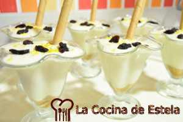

Espumoso de Limon
Ingredientes para 6 personas
- 350 gr. de leche condensada
- 6 yogures naturales
- 2 limones
- 70 gr. de uvas pasas sultanas
- 6 barquillos
- 12 galletas de desayuno
Preparacion
Lavamos los dos limones, y rallamos la piel de ambos.
En un recipiente hondo, mezclamos la leche condensada con los 6 yogures y el zumo de los dos limones. Añadimos también la mitad de la ralladura obtenida (reservamos la ralladura restante para más tarde).
Removemos muy bien hasta obtener un líquido homogéneo, ni muy denso, ni muy fluido.
Metemos la mezcla en el refrigerador, y la mantenemos hasta el momento de servir.
Trituramos las galletas y las reservamos en un lugar sin humedad (si crees que pueden coger humedad, tritúralas justo en el momento de servir).
Echamos una parte proporcional de polvo de galletas en el fondo de cada copa, añadimos el espumoso de limón encima y espolvoreamos con los dedos un poquito de ralladura de limón. Para rematar, dejamos caer seis o siete uvas pasas en cada una de ellas, y por último, decoramos con un barquillo.